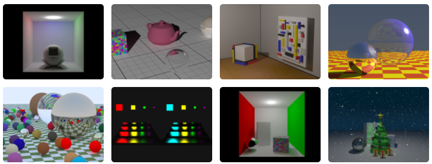

Remote Teaching Advanced Rendering Topics Using the Rayground Platform
Andreas A. Vasilakis
1,2 
Georgios Papaioannou
2
Nick Vitsas2
Anastasios Gkaravelis2
1Department of Computer Science & Engineering, University of Ioannina
2Department of Informatics, Athens University of Economics and Business

Published in: IEEE Computer Graphics and Applications
(Volume: 41, Issue: 5, Sept.-Oct. 1 2021)
Abstract
Rayground is a novel online framework for fast prototyping and interactive demonstration of ray tracing algorithms. It aims to set the ground for the online development of ray-traced visualization algorithms in an accessible manner for everyone, stripping off the mechanics that get in the way of creativity and the understanding of the core concepts. Due to the COVID-19 pandemic, remote teaching and online coursework have taken center stage. In this work, we demonstrate how Rayground can incorporate advanced instructive rendering media during online lectures as well as offer attractive student assignments in an engaging, hands-on manner. We cover things to consider when building or porting methods to this new development platform, best practices in remote teaching and learning activities, and time-tested assessment and grading strategies suitable for fully online university courses.
How to cite
@article{Vasilakis2021,
author={Vasilakis, Andreas A. and Papaioannou, G. and Vitsas, N. and Gkaravelis, A.},
journal={IEEE Computer Graphics and Applications},
title={Remote Teaching Advanced Rendering Topics Using the Rayground Platform},
year={2021},
volume={41},
number={5},
pages={99-103},
doi={10.1109/MCG.2021.3093734}
}
Acknowledgements
This work received funding by the Epic MegaGrants program from Epic Games Inc.
 Computer Graphics AUEB
Computer Graphics AUEB